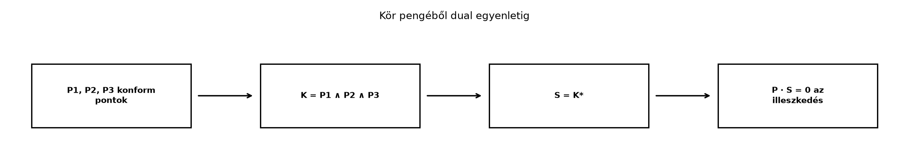

Nézzünk egy alakzatokkal teli geometriai jelenetet: gömbök, körök,
síkok, pontpárok. A hagyományos analitikus geometriában mindegyikhez
más-más egyenlet tartozik, ezért a metszésszámításhoz is más-más képlet
kell. A konform modell egyik legfontosabb előnye, hogy ezek az
objektumok egységesen leírhatók egy-egy pengével, és a
metszésük a már megismert meet-műveletre vezethető vissza.
21.3.1 Szemléletes kép: három
pontból kör, majd illeszkedési próba
Képzeljük el, hogy a síkon adott három pont:
,
és
.
Mindhárom rajta van az origó középpontú,
sugarú körön. A konform modellben ebből a három pontból egyetlen külső
szorzat készíti el a kör pengéjét, a kör duális vektora pedig már
közvetlenül alkalmas arra, hogy tetszőleges pontról belső szorzattal
eldöntsük, rajta van-e a körön.

Kör pengéből dual egyenletig - Három
konform pont külső szorzata adja a kör normál pengéjét; a
pszeudoskalárral való duális vektor a pont-tesztet adja.
Az ábra lépéssora a fejezet fő üzenetét mutatja: a geometriai
objektumot pengéből kapjuk, a számítógépes tesztet pedig a duális vektor
belső szorzatából.
Itt
a közönséges euklideszi vektor,
az origó,
a végtelen irány nullvektora, és
Definíció. Legyen
egy euklideszi pont, és legyen
.
A középpont konform pontja
Ekkor a gömb dual alakjának nevezzük az
konform vektort.
A „dual” elnevezés arra utal, hogy a gömb mint 4 dimenziós penge
duálisa ez az egyszerű 1-vektor; a pontos dualitási kapcsolatot alább, a
metszéseknél használjuk. A gyakorlatban a gömböt gyakran ezzel a dual
vektorral tároljuk, mert az illeszkedési teszt nagyon egyszerű.
Vezessük le a pont-tesztet. Legyen
tetszőleges konform pont. Számítsuk ki
értékét:
Két részre van szükségünk. Egyrészt a konform pontok alaptulajdonsága
szerint
Másrészt
mert
és
.
Ezért
Tehát a pont pontosan akkor van a gömbön, ha
amivel a szokásos
feltételt kaptuk meg.
21.3.3 Sík mint „végtelen sugarú
gömb”
A gömb dual vektorának határeseteként kaphatunk síkot. Ha a sugár
nagyon nagy, és a középpontot is nagyon messzire visszük, a gömb
felülete egy síkhoz tart. A véges sugarú gömbnél használt
kifejezés helyett a határesetben az
-t
és a
-t
valamilyen normális irányú tag dominálja. A szokásos, normált alak:
Definíció. Az
normálvektorú,
egyenletű sík konform reprezentációja:
Ekkor a
pontra
tehát az illeszkedés itt is
alakú.
A síkot tehát ugyanazzal a művelettel tesztelhetjük, mint a gömböt.
Ezt úgy szokás mondani: a sík olyan gömb, amelynek a középpontja a
végtelenbe került.
21.3.4 Kör három pontból, pontpár
két pontból
A konform modellben a körök és gömbök is előállnak pontok külső
szorzataként. A 2 dimenziós euklideszi alapgeometriában (amelyet
CGA(2)-vel jelölünk) a kör 3 pontból:
Ez a kör normál pengéje, szemben a fentebb
bevezetett dual vektorával. A 3 dimenziós CGA-ban a gömb 4 pont külső
szorzata; a kör ott is 3 pontból adódik.
Két pont külső szorzata minden dimenzióban pontpárt
ad:
A pontpár a két pont geometriáját foglalja magában, de nem kell őket
külön koordinátapárokként tárolni; ez előnyös például kör–egyenes
metszésnél.
21.3.5 Metszések egységes kezelése
a meet-művelettel
Itt
az
penge duálisa a konform modell pszeudoskalárjával. A konform modellben
ez a képlet pontosan azt a geometriai metszést adja, amelyet a
klasszikus módszerekkel külön egyenletrendszerekből kapnánk.
Két gömb metszéskörét például így kapjuk. Legyen a két gömb normál
pengéje
és
(mindkettő 4-vektor a 3 dimenziós CGA-ban), és legyen a dual vektoruk
illetve
.
Ekkor a metszéskör normál pengéje:
Tehát a gyakorlatban a két gömb dual vektorának külső szorzatából
kapjuk a metszéskör normál pengéjét. A 2 dimenziós CGA-ban két kör
metszete hasonlóan számolható: ott
és
a körök dual vektorai, az
duálisa pedig az a pontpár, amely a két metszéspontot reprezentálja.
21.3.6 Kidolgozott példa: három
pontból kör és pont-teszt
Legyen a három pont a síkon
A konform pontok a CGA(2)-ben:
Első lépésként képezzük a kör normál pengéjét:
Számítsuk ki a
bivektort is:
A külső szorzat antikommutativitását használva:
Az azonos bázisvektorokat tartalmazó tagok kiesnek. Felhasználva,
hogy
és
:
Ezt megszorozva
-vel,
a 4 dimenziós algebra 3-vektorait kapjuk. A részletszámításból:
A konform pszeudoskalár
,
és a duálisképzés
.
A példában
Ez éppen a várt kör-duálvektor: az origó középpontú,
sugarú kör dual alakja, hiszen
és
Ezzel a három pontból való felépítés és a dual alak kapcsolata is
ellenőrizhető.
21.3.7 Python-ellenőrzés
A teljes, bitmaszkos ga.py modult a Bázispengék bitmaszkkal: az általános szorzás
algoritmusa alfejezetben építjük meg; itt a konform metrika mátrixát
adjuk át, és a 2D CGA-ban dolgozunk. A bázisindexek sorrendje:
0: e0, 1: e1, 2: e2,
3: e∞.
A kör normál pengéjének fokszáma: 3
A kör dual vektora, (e0, e1, e2, e∞) együtthatók:
(1.0, 0.0, 0.0, -0.5)
A kimenet a kézzel kapott
dual vektort adja vissza a bázisindexes jelölésben.
21.3.8 Tipikus hibák és
félreértések
A gömb dual alakjában az
együtthatója
,
nem
.
Az előjel abból jön, hogy
,
tehát az
-es
tag mínusza kompenzálja a pont-teszt belső szorzatát.
A körnek mást jelent a normál pengéje
()
és a dual vektora (például
).
Az illeszkedési teszthez a dual vektorral kell
-t
számolni, nem a normál pengével.
A meet-képletben nem mindegy, hogy a normál vagy a dual alakból
indulunk. Két gömb metszésköréhez a dual vektorok külső szorzatának
duálisát kell venni, nem egyszerűen a két dual vektor wedge
szorzatát.
Az
és
nullvektoroknak nincs vektorinverze, mert
.
A dualitáshoz a teljes pszeudoskalár inverzét használjuk, nem
-et.
21.3.9 Feladatok
21.3.9.1 1. Fogalmi kérdés
Miért nevezzük az
vektort a gömb dual alakjának? Mit ad a
duális a konform modellben?
21.3.9.2 2. Kézi számolás: pont a
körön
Adott a 2D CGA-ban az
középpontú,
sugarú kör. Írjuk fel a kör dual vektorát, és számítsuk ki, hogy a
pont konform vektorával vett belső szorzat nulla-e.
21.3.9.3 3. Levezetési feladat: sík
és illeszkedés
Vezessük le, hogy az
egyenletű sík
vektorára
.
21.3.9.4 4.
Alkalmazási/Python-feladat
Egészítsük ki a fenti Python-kódot úgy, hogy két 2D kör dual
vektorából kiszámítjuk a metszéspontpárt a meet-formulával:
Használjuk például az
()
és
köröket. Ellenőrizzük, hogy az eredmény 2-vektor, és a könyv Záróprojekt: saját geometriai algebra könyvtár
fejezetében ezt az objektumkészítést fogjuk általános
objektum-adatbázisban felhasználni.
21.3.10 Megoldások
21.3.10.1 1. megoldás
A gömb normál pengéje a konform térben 4-vektor; a pszeudoskalárral
való duálisa 1-vektor, vagyis egy konform vektor. Ez a vektor éppen
,
és a belső szorzattal adódó
közvetlenül leírja az illeszkedést. Ezért nevezzük dual alaknak.
A várt eredmény egy 2-vektor, amely a két metszéspont konform
pontjának
külső szorzatával arányos. Ez a fogás a [Záróprojekt
I: saját geometriai algebra könyvtár tesztekkel] záróprojektben is
visszaköszön, ahol a CGA objektumokból közös adatbázist építünk, és a
metszést egységes meet-rutin végzi.
21.3.11 Rövid összefoglaló
A konform modellben a geometriai objektumok pengékkel ábrázolhatók. A
gömb dual vektora
,
és az illeszkedési feltétel
,
mert
.
A sík a
vektor, és
.
A kör három pont külső szorzata:
;
a pontpár
.
A metszések a meet-művelettel egységesen számíthatók:
.
Két gömb metszésköre a dual vektorokból
.
Továbbvitt eredmény: ezeket a pengékké alakítási és
meet-módszereket használjuk a Záróprojekt: saját
geometriai algebra könyvtár tesztekkel alfejezetben, ahol a CGA
objektumokat közös adatszerkezetben tároljuk és metszéseiket egyetlen
rutinnal végezzük el.
21.3.12 Források és ellenőrzési
hiányok
Az alfejezet a konform geometriai algebra szokásos dualitási
összefüggéseit használja; a konvenciók megegyeznek a könyv Konform modell: az alapötlet részével. Konkrét
könyvtár-API-kat itt nem ellenőriztünk; a ga.py felületet a
[Bázispengék bitmaszkkal: az általános szorzás
algoritmusa] alfejezet specifikációja szerint használtuk. A
CGA-metrika mátrixos megadása a bitmaskos általános szorzásnál
valósítható meg, ezért a kód ezen a ponton oktatási céllal, a metrika
belső szorzatainak közvetlen megadásával él.